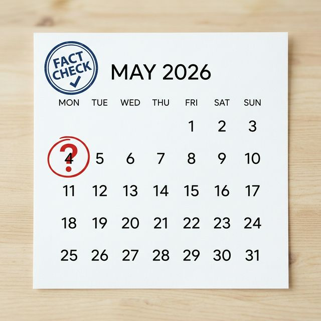

▲ 2026년 5월 샌드위치 데이인 4일의 휴무 여부에 대한 팩트체크 이미지
먼저 2026년 5월의 달력 구조를 살펴보면 왜 많은 분이 설레는지 금방 알 수 있습니다.
보시다시피 4일 하루만 쉬면 무려 5일간의 황금연휴가 완성됩니다. 이 정도면 제주도는 물론이고 가까운 일본이나 동남아 여행까지 충분히 고려해 볼 수 있는 시간이죠. 샌드위치 데이가 월요일이라는 점, 그리고 앞뒤로 금요일과 화요일이 휴무라는 기가 막힌 타이밍이 이번 '루머'의 촉발제가 되었습니다.
솔직히 저도 직장인의 한 사람으로서 "와! 쉰다!"는 소식을 전해드리고 싶었습니다만, 사실은 냉정해야 합니다. 임시공휴일 지정은 국무회의 심의와 대통령 재가라는 엄격한 행정 절차를 거쳐야 합니다. 보통 이런 결정은 소비 진작이 절실한 시점에 전략적으로 발표되는 경우가 많기 때문에, 만약 지정된다 하더라도 4월 중순은 되어야 공식적인 소식을 들을 수 있을 것으로 보입니다.
▲ 모니터 앞에서 5월 연휴 여행지를 검색하며 휴식을 꿈꾸는 직장인의 모습
정부가 임시공휴일을 지정할 때 가장 중요하게 고려하는 것이 바로 '내수 진작 효과'입니다. 사람들이 쉬어야 돈을 쓰고, 그래야 경제가 돌아간다는 논리죠.
관광업계, 숙박업계, 그리고 고사 직전인 지역 소상공인들에게 연휴는 가뭄의 단비와 같습니다. 5일간의 연휴가 생기면 수조 원에 달하는 경제 파급 효과가 발생한다는 리포트도 많습니다. 특히 이번에는 벚꽃 시즌과도 겹쳐 있어 국내 여행 수요가 폭발할 가능성이 큽니다.
하지만 기업들, 특히 영세 중소기업들은 속이 타들어갑니다. 공장이 멈추면 생산 손실이 발생하고, 쉬지 못하는 서비스 업종 종사자들과의 형평성 문제도 제기됩니다. "나랏돈으로 생색은 정부가 내고, 인건비 부담은 사장이 진다"는 비판이 나오는 이유이기도 합니다.
전문적으로(?) 노는 분들은 이미 알고 계십니다. 정부 발표가 나오면 이미 늦습니다. 비행기 표값은 천정부지로 치솟고, 인기 있는 감성 숙소는 'Full' 사인이 뜰 것이기 때문입니다.
만약 정부가 4일을 임시공휴일로 짜잔! 하고 지정해준다면, 미리 낸 연차는 자동으로 취소되어 주머니 속에 보관됩니다. 손해 볼 것 하나 없는 '행복 회로' 투자인 셈입니다.
과거 문재인 정부나 윤석열 정부 모두 명절이나 징검다리 휴일 중 하루를 임시공휴일로 지정해 6일 이상의 긴 연휴를 만들어준 전례가 있습니다. 특히 서민 경제가 어려울수록 '휴식권 보장'이라는 테마는 정부가 꺼내 들기 가장 매력적인 카드입니다.
필자의 개인적인 견해로는, 지정 확률을 50:50으로 봅니다. 현재 고물가 정국이라 내수 소비를 강제로라도 끌어올려야 할 필요성이 크기 때문입니다. 하지만 "아직은 아니니 기대만 하고 있자" 정도가 가장 적절한 현실 자각 타임입니다.
만약 연휴가 확정된다면, 혹은 연차를 쓰기로 했다면 어디가 좋을까요?